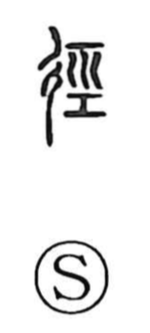

径

Uncategorized
Kun: michi, komichi, sugu, tadachini | On: kei
path ・ trail ・ shortcut ・ diameter
Explanation
Originally written 徑, this is a phono-semantic compound. On the left stands 彳, the “road” element (the left side of 行), marking the sense of a way or path. On the right is 巠, which supplies the sound kei and depicts the warp threads spread across a loom, straight lines drawn tight with a bar at the base—an image of linear extension. Together they express a direct, straight course: a shortcut compared with the ordinary road, hence a narrow path or trail. From this come usages such as 徯径 for a small animal track and 捷径 for a quick, easy method (with 捷 meaning swiftness). The character also carries the sense of doing something directly or at once, and appears in compounds like 直径, “diameter.” A related form, 逕, shares the same meaning.